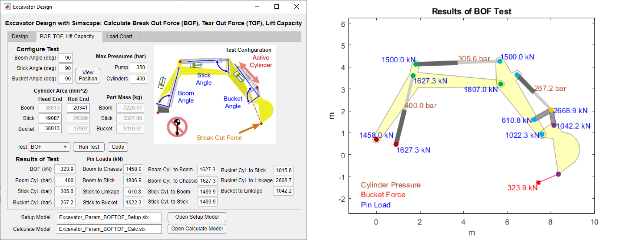
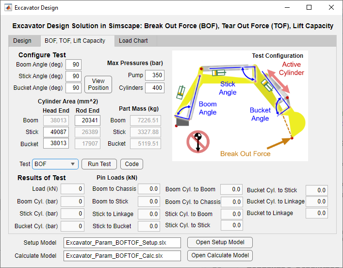
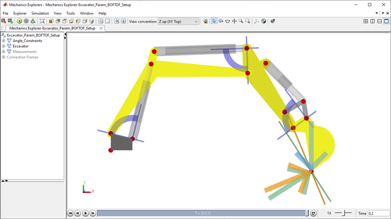
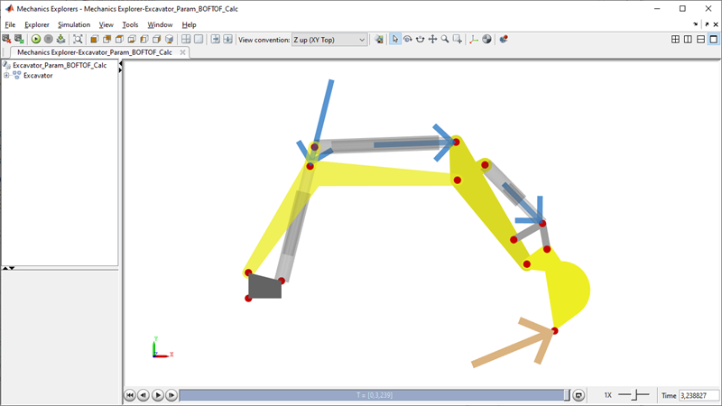
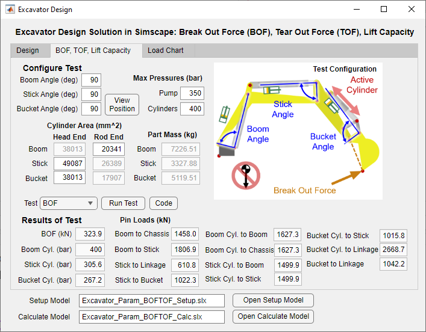
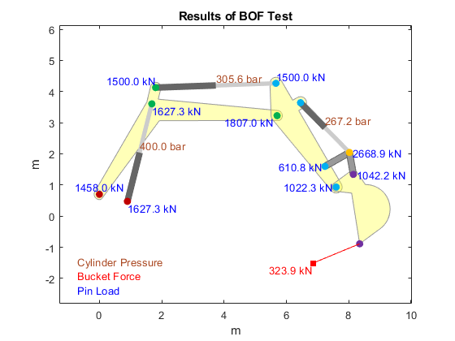
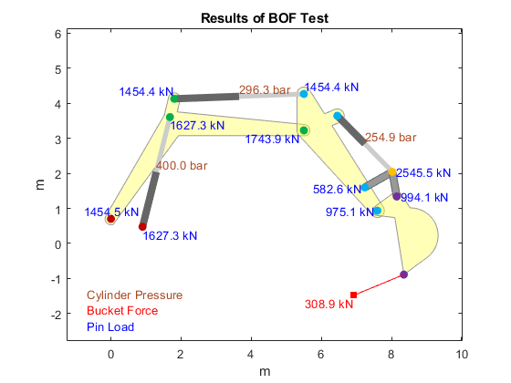
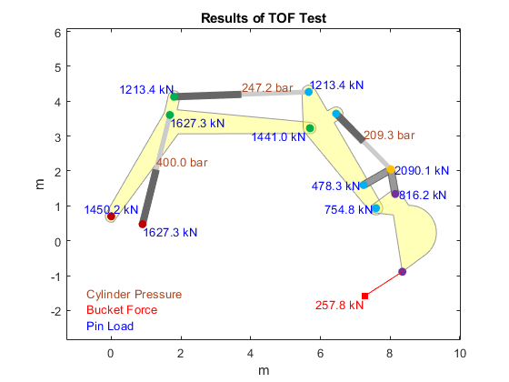
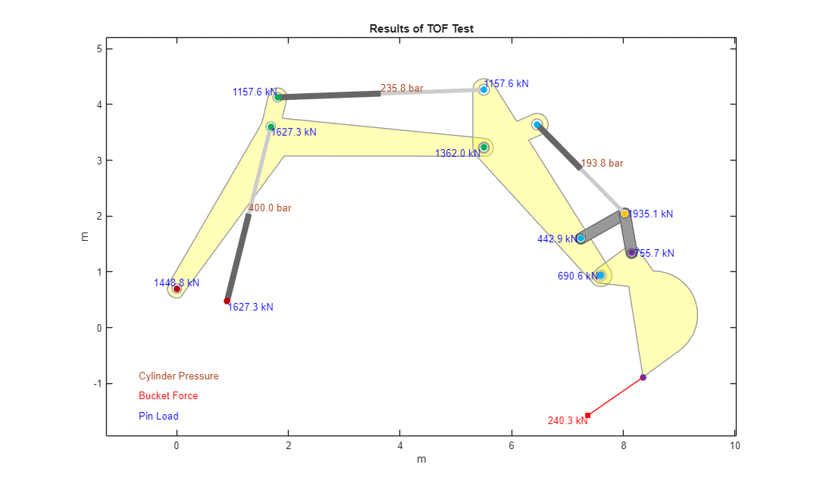

Excavator Design with Simscape™: BOF, TOF Calculation

(return to Excavator Design Overview)
This app enables you to calculate the Break Out Force (BOF) and Tear Out Force (TOF) per standard ISO 6015:2006 "Earth-moving machinery -- Hydraulic excavators and backhoe loaders -- Methods of determing tool forces."
You use the app to specify:
- Pin locations
- Maximum hydraulic relief pressures
- Cylinder areas
The app will translate these values into the appropriate parameters for a Simscape Multibody model of the excavator and use that model to calculate the BOF (or bucket cylinder tool force) and the TOF (or arm cylinder tool force).
Open App for Calculating BOF, TOF, and Load Capacity
Contents
Excavator Design App: Define Pin Locations
On the "Design" tab you specify the pin locations in the design position.
- Edit the pin locations in the table.
- Press the "Plot Design Position" button to draw the excavator.
- Press the "Model Design Position" button to display the model. This loads the pin locations into the MATLAB workspace.
Pre-saved sets of pin locations can be loaded from Excel.


Excavator Design App: Calculate Break Out Force (BOF), Tear Out Force (TOF)
On the "BOF, TOF" tab you configure the BOF/TOF calculation.
- Set the key angles (all 90 degrees per the ISO standard)
- Press "View Position" button to confirm position
- Define maximum pressures for the actuators
- --- For BOF, the active cylinder is the bucket cylinder.
- --- For TOF, the active cylinder is the stick cylinder.
- --- For Load Chart, the active cylinder is the boom cylinder.
- Define cylinder cross-sectional areas.
- Set "Test Type" dropdown to the type of test you wish to run
- Press "Run Test" button

The model visualizes the angles specified for the test configuration. The arrows indicate the axes along which the load will be applied.
- BOF: Green arrow
- TOF: Orange arrow
- Load Chart: Blue arrow (direction of gravity)

The arrows in the calculation show the force applied and the forces in each cylinder. This image shows the BOF test. During the test,
- Gravity is turned off, as defined by the ISO standard
- The cylinders are locked in the specified test position
- The load is increased until one of the cylinders reaches the limit specified in the app.

The force on the bucket, cylinder pressures, and pin loads are updated in the respective fields of the UI, and a plot shows their values overlaid on a sketch of the excavator.


BOF Test, Design A
Calculation of the Break Out Force (BOF) and Tear Out Force (TOF) can be automated using MATLAB commands. The MATLAB code below determines the BOF and TOF for two different designs.
mdl_BOFTOF_setup = 'Excavator_Param_BOFTOF_Setup'; mdl_BOFTOF_calc = 'Excavator_Param_BOFTOF_Calc'; Excavator_Init_Params Excavator_System_params Scenario = Excavator_Test_Scenario_Define; MPdata = readtable('Excavator_Pin_Locations_global.xlsx','Sheet','Design A','Range','B2:F15','VariableNamingRule','preserve'); ExcvGlobal = Excavator_Pin_Locations_table2struct(MPdata); ExcvLocal = Excavator_Pin_Locations_global2local(ExcvGlobal); Excavator_Test_Scenario_Select('BOF',mdl_BOFTOF_setup,mdl_BOFTOF_calc) simOut = sim(mdl_BOFTOF_calc); [fLoad,test_type,pBoom,pStick,pBucket,pinForces]= Excavator_simlogToBOFTOF(simOut.logsout); disp([test_type ' (kN): ' num2str(fLoad)]); disp(['Boom Cylinder Pressure (bar): ' num2str(pBoom)]); disp(['Stick Cylinder Pressure (bar): ' num2str(pStick)]); disp(['Bucket Cylinder Pressure (bar): ' num2str(pBucket)]); Excavator_BOFTOFLoad_plot(ExcvGlobal,fLoad,test_type,pBoom,pStick,pBucket,pinForces);
BOF (kN): 323.8827 Boom Cylinder Pressure (bar): 400 Stick Cylinder Pressure (bar): 305.5686 Bucket Cylinder Pressure (bar): 267.2291
BOF Test, Design B
MPdata = readtable('Excavator_Pin_Locations_global.xlsx','Sheet','Design B','Range','B2:F15','VariableNamingRule','preserve'); ExcvGlobal = Excavator_Pin_Locations_table2struct(MPdata); ExcvLocal = Excavator_Pin_Locations_global2local(ExcvGlobal); Excavator_Test_Scenario_Select('BOF',mdl_BOFTOF_setup,mdl_BOFTOF_calc) simOut = sim(mdl_BOFTOF_calc); [fLoad,test_type,pBoom,pStick,pBucket,pinForces]= Excavator_simlogToBOFTOF(simOut.logsout); disp([test_type ' (kN): ' num2str(fLoad)]); disp(['Boom Cylinder Pressure (bar): ' num2str(pBoom)]); disp(['Stick Cylinder Pressure (bar): ' num2str(pStick)]); disp(['Bucket Cylinder Pressure (bar): ' num2str(pBucket)]); Excavator_BOFTOFLoad_plot(ExcvGlobal,fLoad,test_type,pBoom,pStick,pBucket,pinForces);
BOF (kN): 308.9146 Boom Cylinder Pressure (bar): 400 Stick Cylinder Pressure (bar): 296.2922 Bucket Cylinder Pressure (bar): 254.8792
TOF Test, Design A
MPdata = readtable('Excavator_Pin_Locations_global.xlsx','Sheet','Design A','Range','B2:F15','VariableNamingRule','preserve'); ExcvGlobal = Excavator_Pin_Locations_table2struct(MPdata); ExcvLocal = Excavator_Pin_Locations_global2local(ExcvGlobal); Excavator_Test_Scenario_Select('TOF',mdl_BOFTOF_setup,mdl_BOFTOF_calc) simOut = sim(mdl_BOFTOF_calc); [fLoad,test_type,pBoom,pStick,pBucket,pinForces]= Excavator_simlogToBOFTOF(simOut.logsout); disp([test_type ' (kN): ' num2str(fLoad)]); disp(['Boom Cylinder Pressure (bar): ' num2str(pBoom)]); disp(['Stick Cylinder Pressure (bar): ' num2str(pStick)]); disp(['Bucket Cylinder Pressure (bar): ' num2str(pBucket)]); Excavator_BOFTOFLoad_plot(ExcvGlobal,fLoad,test_type,pBoom,pStick,pBucket,pinForces);
TOF (kN): 257.7931 Boom Cylinder Pressure (bar): 400 Stick Cylinder Pressure (bar): 247.1939 Bucket Cylinder Pressure (bar): 209.2771
TOF Test Design B
MPdata = readtable('Excavator_Pin_Locations_global.xlsx','Sheet','Design B','Range','B2:F15','VariableNamingRule','preserve'); ExcvGlobal = Excavator_Pin_Locations_table2struct(MPdata); ExcvLocal = Excavator_Pin_Locations_global2local(ExcvGlobal); Excavator_Test_Scenario_Select('TOF',mdl_BOFTOF_setup,mdl_BOFTOF_calc) simOut = sim(mdl_BOFTOF_calc); [fLoad,test_type,pBoom,pStick,pBucket,pinForces]= Excavator_simlogToBOFTOF(simOut.logsout); disp([test_type ' (kN): ' num2str(fLoad)]); disp(['Boom Cylinder Pressure (bar): ' num2str(pBoom)]); disp(['Stick Cylinder Pressure (bar): ' num2str(pStick)]); disp(['Bucket Cylinder Pressure (bar): ' num2str(pBucket)]); Excavator_BOFTOFLoad_plot(ExcvGlobal,fLoad,test_type,pBoom,pStick,pBucket,pinForces);
TOF (kN): 240.2918 Boom Cylinder Pressure (bar): 400 Stick Cylinder Pressure (bar): 235.8249 Bucket Cylinder Pressure (bar): 193.7608